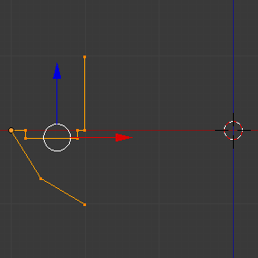

螺旋工具¶
参考
- 模式
编辑模式
螺旋 工具是将重复的 旋绕 与移动结合，生成类似螺纹，或者螺旋形的物体。使用该工具制作螺纹、弹簧或者壳形结构(海贝、木螺钉尖、特殊轮廓等)。
螺旋工具和 螺旋修改器 的主要差异在于螺旋工具可以自动使用基础轮廓计算角度前进量。它无需其他修改器(比如，将倒角修改器、曲线修改器与螺旋修改器一起使用)就可以调整轴向角度向量，实现更加干净的顶点分布和用法。
该工具可用于开放或者闭合的轮廓，也可以是带有闭合面的轮廓。用户可以使用整体的一条开放边线作为轮廓，也可以是一个封闭的圆或者半球这样闭合的轮廓。
图 使用螺旋工具制作的木螺丝尖。 和图 螺旋工具制作的弹簧。 可以看到使用 螺旋 工具生成网格的一些例子。

使用螺旋工具制作的木螺丝尖。¶ |

螺旋工具制作的弹簧。¶ |
用法¶
该工具仅可在 编辑模式 下作用于网格， 螺旋 工具的按钮位于 网格工具 面板， 。使用该工具前，需要至少创建一个开放轮廓或线条，用作高度向量、角度向量，并给Blender提供一个方向。
螺旋 工具使用开放线条的提供的两个点来创建初始向量，计算为每圈“弯绕”叠加的平移向量的高度和基础角度(见下文范例)。如果该向量是由两个相同(X, Y, Z)坐标的顶点创建的(无法向Blender提供一个用作高度的向量值)，操作等同于常规"弯绕"。
向量直线准备好之后，就可以添加其他沿该向量挤出的闭合轮廓了(见 限制)。挤出的方向是根据两个决定因子计算的：全局空间中的视点和全局坐标空间中的游标位置。在按下 螺旋按钮 前，必须先在 编辑模式 选中该轮廓和向量(见 限制)。选中用作向量的开放轮廓和其余闭合轮廓后，单击 螺旋 按钮。
限制¶
该工具对选定的轮廓有严格的限制。用户需要至少选择一段开放的线条或轮廓，以提供挤出的起始向量、角度向量和高度(比如：简单的一条边、一个半圆等)。用户需要确保参考线两端“自由”。如果提供了两段开放线条，Blender无法确定使用哪一根作为起始向量，且会显示错误信息 "你还得另选一串相连的顶点"。用户需要选择所有参与 螺旋 操作的轮廓顶点；如果选择的不恰当，Blender也会显示前面相同的错误信息。
注意：开放的线条同样会被挤出，所以如果它只是用作"引导"螺旋操作，操作结束后需手动删除(使用关联选择 Ctrl-L，选中开放线条的整个挤出结果)。
如果还有其他的选中项或轮廓错误，状态栏 和单击操作位置(单击螺旋按钮的位置)会同时显示错误信息： "你还得另选一串相连的顶点"，如图 信息编辑器标题栏上的螺旋错误信息。 与 图 选中项错误时，单击螺旋工具时显示的错误信息。。
信息编辑器标题栏上的螺旋错误信息。¶

选中项错误时，单击螺旋工具时显示的错误信息。¶
用户可以同时使用任意数量的轮廓(比如圆、方形等) --要注意的是，并不要求所有轮廓都是共面的，尽管这是最常见的情况。用户还可以使用其他更加复杂的闭合孤岛，不过它们都必须是闭合的轮廓，因为Blender只需要一个开放轮廓来确定移动、高度和角度向量。一些自重叠的闭合网格可能无法获得正确的螺旋结果(比如：半个经纬球没问题，但是多于半个会导致异常结果或错误)，并且包含多个面的闭合轮廓(比如圆锥或半球)会在其端点自动封闭，如同只对部分区域进行挤出一样。
Tip
避免错误的简单方法
仅使用一个开放轮廓，其他轮廓都是闭合的，避免体轮廓和一些多个面组成的闭合轮廓。
选项¶
该工具是交互式和模态化的，并且只能在 编辑模式 使用。
在网格工具面板单击 螺旋 工具过后，Blender会进入 螺旋 交互模式，网格工具面板下方的 调整上一步操作 面板将替换为当前操作，以对下文提到的这些参数进行调整。在3D视图编辑模式下，使用快捷键 T，显示网格工具面板。
一旦进行了其他操作后，Blender将退出交互模式，接受其他输入。由于该操作是模态的，所以无法在结束/退出操作或切换为 物体模式 后回到该交互模式。如果想要重新执行该操作，可以在 编辑模式 按下 Ctrl-Z 撤销操作。
游标在视图中的位置(使用全局坐标系)将决定选中元素挤出和弯绕围绕的轴向(见图 侧栏 ‣ 游标.)。Blender会将游标坐标复制为 螺旋 交互面板上的 中心 值。根据其全局位置，Blender会自动添加一个大小为1的轴向量，赋予轮廓一个螺旋操作的初始方向和挤出方向(见下文范例)。
3D游标的位置将作为旋转开始的中心。接下来的操作(比如再次执行螺旋操作)会从最后一组选中元素开始。不改变选中元素继续操作的话，会从最后一组顶点继续操作。

.¶
- 中心
这几个数字按钮用于指定弯绕的中心。首次执行操作时，将复制当前3D视图中游标的(X, Y, Z)位置(全局坐标)启动操作。可以使用快捷键: kbd:T 打开变换面板，输入游标坐标值，指定游标坐标。在交互操作时，可以调整坐标，指定其他位置作为弯绕中心(见图 螺旋工具 ui-undo-redo-adjust-last-operation 面板(编辑模式)。)。
- 步数
该数字框用于指定360度一圈所执行的挤出次数。这些步数在360度范围内均匀分配。最小值为3；最大值为256 (见图 螺旋工具 ui-undo-redo-adjust-last-operation 面板(编辑模式)。)。
- 圈数
该数字框用于指定旋转的圈数。数字每提高1，就多一圈螺旋。最小值为1；最大值为256 (见图 螺旋工具 ui-undo-redo-adjust-last-operation 面板(编辑模式)。)。
- 轴向
这三个数值框限制输入范围为 (-1.0 to 1.0)。这些值分别对应(-90 to 90)度的角度向量。根据游标和操作对象在视图中的位置，及其全局空间中的轴向和坐标，Blender会得出一个大小为1的轴向量，给轮廓角度向量一个起始方向，给挤出一个起始方向。Blender允许调整轴向向量，用户可以借此翻转螺旋的方向(通过翻转高度的角度向量)，这意味着可以调整操作的顺时针和逆时针方向，同时调整轮廓的角度向量，获得对应的弯曲(见图 螺旋工具 ui-undo-redo-adjust-last-operation 面板(编辑模式)。)。
范例¶
弹簧¶
中心位于X轴 (-3, 0, 0)的圆。¶
打开Blender，删除默认立方体。
快捷键 Numpad5 将视图模式从透视调整为正交。
快捷键 Numpad1 将视图模式从 用户正交 调整为 前视正交，这时可以看到X(红)和Z(蓝)向轴线。
使用 Shift-S 选择 游标 -> 中心点 或直接在3D游标面板将游标坐标修改为(0, 0, 0)，以防单击将游标移动到了屏幕的其他位置。
快捷键 Shift-A 添加一个圆。
快捷键 R X 9 0 并 Return，旋转该圆。
Ctrl-A 并选择 旋转，应用缩放。
拖拽该圆沿X轴向左移动3个单位；可以使用标准变换控件，在使用鼠标拖拽时按住 Ctrl (在物体上的红色箭头上单击，拖拽的同时按住 Ctrl ，直至3D视图左下角显示
D. -3.0000 (3.0000) 全局)，或使用快捷键 G X Minus 3 并 Return。还可以使用变换面板，在位置的X轴坐标中输入 Minus 3 并 Return (见图 中心位于X轴 (-3, 0, 0)的圆。)。快捷键 S . 5，然后 Return，缩放圆环。
快捷键 Tab 进入 编辑模式。
快捷键 A，取消全选所有顶点。
下面是创建高度向量的步骤:

创建的轮廓和向量。¶
按住 Ctrl ，在圆环旁边 LMB 左键单击，大致位置为圆环上方方形的浅灰色网格线上，然后继续按住 Ctrl 不放， LMB 左键在圆环下方的灰色网格线上单击。这样就创建 了两个顶点与一条边，用作高度和角度向量。
现在，在变换面板，单击全局坐标系按钮，并修改质心 (X, Y, Z) 坐标为(-2, 0, -1)。
RMB 单击选择另一个顶点，修改坐标为 (-2, 0, 1)。这样就创建一条高度为2个单位的竖直直线。
快捷键 A 两次，取消全选，再全选 (见图 创建的轮廓和向量。)。
接着，再将游标置于中心点。 (重复步骤2)。
这时，保存blend文件，以便在下一次练习中继续使用； LMB 单击信息编辑器标题栏上的 文件 菜单(左上方)，并选择 另存为。我们建议命名为 Screw Spring Example.blend，并单击 另存为 按钮，对其进行命名，比如: "screw spring example.blend"。
单击螺旋按钮，调整步数和圈数，一个漂亮的弹簧出来了，下面才是最精彩的部分!
顺时针与逆时针举例¶
还是在 螺旋工具 的交互状态，可以看到 螺旋 面板的 Z轴 值为1.000。在该值上 LMB 单击，并重设为-1.000。弹簧的绕线方向一开始是逆时针方向，现在 Z轴 方向翻转了180度。这是因为将传递给Blender的高度的角度向量变成了相反方向(记住 -90 到 90 = 180 度)见图片 弹簧方向。。

逆时针方向。¶ |

翻转为顺时针方向。¶ |
还有一点需要注意的是，该向量与用于挤出的高度向量轴向有关，由于这里创建的直线平行于 Z轴，所以该向量实际上只响应挤出轴向的取正与取负变化。Blender会该值在其上下限范围内。该规则同样适用于在其他轴向使用 螺旋 工具；这意味立着如果在顶视图(快捷键 Numpad7) 创建一条平行于其他轴向(比如顶视图下的 Y轴)的直线，高度向量同样会随着正负转换来切换挤出的方向，你需要调整对应轴向来获得顺时针和逆时针的效果。
Note
向量不平行于Blender轴向
上面提到的并不适用于存在起始角度(即向量不平行于轴向)时使用螺旋工具，这意味着Blender不需要通过限制数值来稳定挤出的方向，因为向量的倾斜已经足以用于判断方向了，用户可以调整该向量为各种方向。上面的例子中仅有一个平行于Blender轴向的挤出方向，仅改变了轮廓的挤出方向，而没有任何倾斜和/或弯曲效果。
使用弹簧范例弯曲轮廓¶
依旧使用上面的弹簧为例子，我们修改与挤出轴向无关的轴向来调整角度，这样就可以使用其余两个轴向向量来弯曲这个弹簧，随着起始角度向量值的变化，创建开放和/或闭合的轮廓。这其实就是改变挤出前轮廓的起始角度。这意味着Blender会连接所有随向量倾斜的圆环。下面是两个作用轴向向量弯曲弹簧的例子。见图 弯曲后的网格。。这两个用 螺旋 工具生成的网格在顶视图下的观察效果。

轴向量赋予轮廓一个起始角度。¶ |

向量朝向挤出方向。¶ |
创建螺杆¶
用上面的例子，很容易就可以创建一根完美的螺杆(如同我们在五金店里买到的那种)。完美的螺杆使用相同的高度作为其向量，并且轮廓的首末两点位于一条与挤出轴平行的直线上。要实现这种效果，最简单的办法就是创建一个首末顶点构成(轴向)平行线的轮廓。Blender只会使用首末两点作为其角度向量，而不考虑两者之间的其余顶点，所以螺杆的螺纹(由圈数值决定)才可以完美地互相结合。
打开Blender，单击信息编辑器标题栏上的 文件 菜单，选择 打开近期文件，选中此次练习保存的文件。一切会恢复到文件保存之前的状态。选择最后保存的blend文件; 在上次练习中，我们将其命名为 Screw Spring Example.blend。
快捷键 A 取消全选所有顶点。
快捷键 B, 进入框选模式。
框选除前面例子中用作挤出高度的两个顶点之外的所有顶点。
X 全部删除。
快捷键 A 选择余下的顶点。
选择 .
现在， RMB 选择中间的顶点。
快捷键 G X Minus 1 移动该顶点，然后回车 Return，见图片 用于完美螺杆的轮廓。。
这时，保存该文件，以便将其用于下一个螺旋练习； LMB 单击 文件 菜单 -- 位于信息编辑器标题栏(左上方)，选择 另存为。我们建议将其命名为 Screw Hardware Example.blend ，然后单击 另存为 按钮。还可以使用快捷键 Shift-Ctrl-S 打开文件浏览器保存该文件。
按下快捷键 A 两次，取消全选，然后再全选所有顶点。
现在按下螺旋。
随意修改步数和圈数。图 生成的网格。 - 展示了结果的一种情况。


图 楼梯。 展示了如何使用其他轮廓的例子，但是首末顶点还是在原来的位置。生成的网格看起来像是中世纪的楼梯!

首末顶点平行于Blender轴线的轮廓。¶ |

左侧的轮廓生成的网格。我们将观察角度稍微倾斜了一些。¶ |
如你所见，螺纹完美地结合在一起，看起来像是一条自上而下的直线。你还可以修改该例子中顺时针和逆时针的挤出方向，创建右旋和左旋螺纹。这时候，你还可以赋予螺旋另一个尺寸，改变弯绕挤出的中心点，使之更加符合你的需要，或者生成一个完美螺旋，然后将其与圆柱上的顶点合并，对螺帽进行建模等。
尖头螺丝¶
正如前面提到的， 螺旋工具 生成干净简单的网格，易于处理；它们简洁，连接有序，并且结果可预测。这是因为Blender不仅考虑了向量的高度，还考虑了起始角度。这意味着Blender可以使用连续的循环来连接挤出后的轮廓。
在这个例子中，用户可学习如何制作尖头螺丝(比如木头螺钉；在本页展示一个这样的例子)。为了让这个例子尽可能简短，我们会用到上一个例子中的文件。
打开Blender，单击信息编辑器标题栏上的 文件 菜单，选择 打开近期文件，选中此次练习保存的文件。一切会恢复到文件保存之前的状态。选择最后保存的blend文件; 在上次练习中，我们将其命名为 Screw Hardware Example.blend。
拖动上面的顶点，并向左稍微移动一点，但是不要超过最后的顶点。(见图片 有起始角度的轮廓。)。
按下快捷键 A 两次，取消全选，然后再全选所有顶点。
Press the shortcut Shift-S and select Cursor to Center.
按下螺旋。

有起始角度的轮廓。¶ |

使用该轮廓生成的网格。¶ |
正如在图片 使用该轮廓生成的网格。 中看到的，Blender沿着轮廓的基本角度向量，轮廓的基础角度决定了接下来沿着该角度的挤出是开放还是闭合网格。挤出角度向量由轮廓的首末顶点确定。